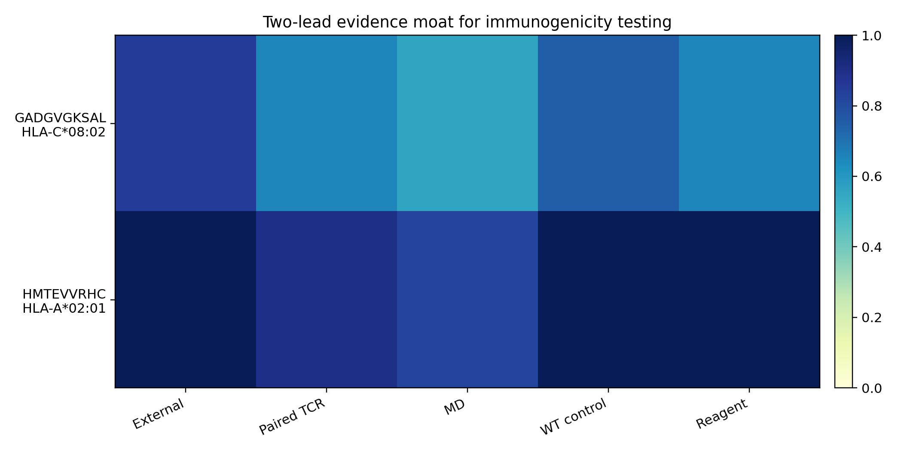
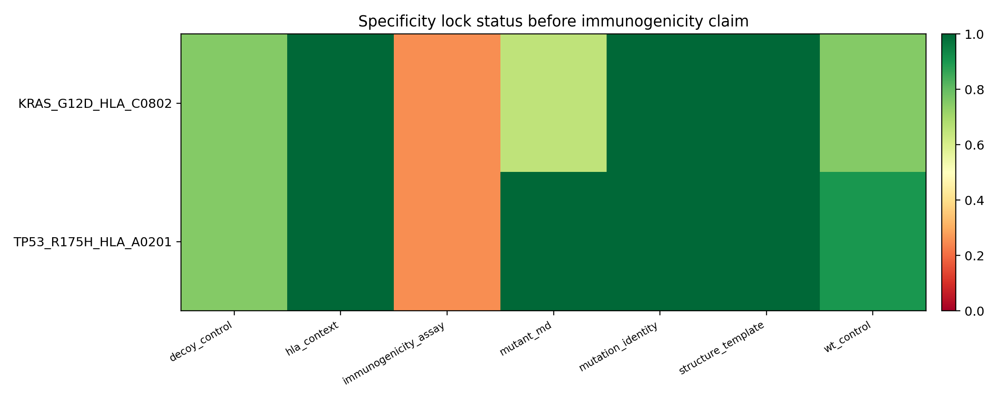
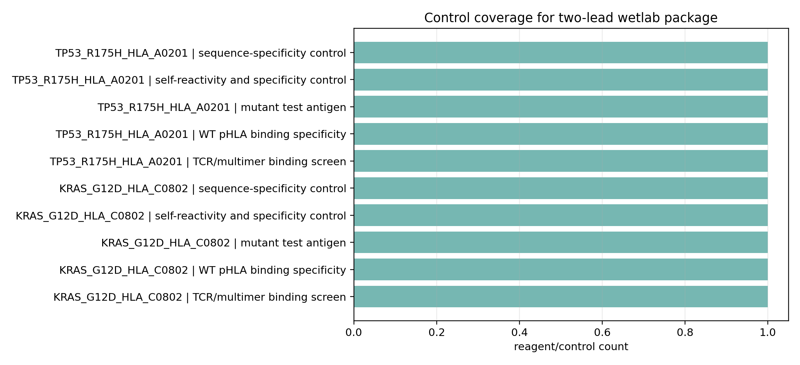

Decision
Use the strict Top-13 list as the immediate wetlab triage board, with GADGVGKSAL and HMTEVVRHC as the highest-value structure/TCR case studies. Keep the claim as prioritization until WT/decoy assays and external validation are done.
This is not 100% accuracy, clinical utility, or immunogenicity proof. The zero-FP result is measured on the currently available labels and must be stress-tested externally.
Interactive threshold dashboard
Decision storyboard
Full MD/TCR dossier
Full report
One-page Korean summary
Kakao one-shot KR
Figure/table guide
Evidence-to-claim matrix
Manuscript figure/table plan
Immunogenicity simulation report
Simulation commands
RunPod sim status
Two-lead impact report
Two-lead manuscript insert
Two-lead Korean brief
Assay-ready report
Assay-ready Korean brief
Top Case Cards
GADGVGKSAL HLA-C*08:02
NEPdb · label positive · TIER_A_EXPERIMENT_NOW_WITH_CONTROLS
- Main DL
- 0.770
- TCR branch
- 0.960
- Paired TCR evidence
- 13
- Structure/MD
- 0.950 / MD_MODERATE
HMTEVVRHC HLA-A*02:01
NEPdb · label positive · TIER_A_EXPERIMENT_NOW_WITH_WT_CURATION
- Main DL
- 0.467
- TCR branch
- 0.983
- Paired TCR evidence
- 18
- Structure/MD
- 1.000 / MD_VERY_STRONG
KLILWRGLK HLA-A*03:01
ITSNdb_main · label positive · TIER_D_TCR_OR_WT_CURATION_FIRST
- Main DL
- 0.803
- TCR branch
- 0.985
- Paired TCR evidence
- 0
- Structure/MD
- 0.000 /
ILDKVLVHL HLA-A*02:01
ITSNdb_main · label positive · TIER_D_TCR_OR_WT_CURATION_FIRST
- Main DL
- 0.773
- TCR branch
- 0.962
- Paired TCR evidence
- 0
- Structure/MD
- 0.000 /
Representative Figures
Top-13 No-FP Evidence
Evidence board for the strict current-label Top-13 candidate list.
PNG PDF{kind=link}

Source-Stratified Performance
Per-source TP/FP/FN behavior for optimized decision presets.
PNG PDF
Claim Ladder
Allowed, future, and forbidden claim levels for model/TCR/MD evidence.
PNG PDFWetlab Workflow
Go/no-go validation sequence from peptide-HLA binding to WT/decoy-controlled T-cell assays.
PNG PDF{kind=link}

Immunogenicity Simulation Ladder
Which cheap, short-MD, specificity-control, and expensive modules are added before wetlab testing.
PNG PDF
Simulation Budget
Requested short-MD trajectory length by candidate before wetlab escalation.
PNG PDFAssay Bridge
How HLA binding, multimer, ELISpot/ICS, and killing assays map to simulation evidence.
PNG PDF{kind=link}
Readiness Status
Which simulation modules are ready, queued, held, or blocked by WT/decoy/TCR curation.
PNG PDF{kind=link}

Two-Lead Evidence Moat
External literature, paired TCR, MD, WT controls, and reagent actionability for the two flagship candidates.
PNG PDF{kind=link}

Specificity Locks
Mutation, HLA, structure, MD, WT/decoy, and assay status before any immunogenicity claim.
PNG PDF{kind=link}

Impact Upgrade Flow
How candidate ranking becomes a controlled immunogenicity test plan.
PNG PDF
Reagent Order Sheet
Mutant, WT, decoy, and pHLA reagent rows needed to start controlled assays.
PNG PDF
Control Coverage
Which controls are explicitly represented for each flagship lead.
PNG PDF{kind=link}

Assay Go/No-Go Ladder
Presentation, multimer, activation, and killing gates before any strong claim.
PNG PDF
Reviewer Defense Moat
Likely reviewer objections and the asset that answers each one.
PNG PDF
Evidence-To-Claim Matrix
Actual evidence, supported claim, and blocked overclaim in one reviewer-facing board.
PNG PDFTwo-Lead Impact Upgrade
The strongest upgrade is no longer only a ranked list. It is a controlled two-lead case-study plan: KRAS G12D / HLA-C*08:02 and TP53 R175H / HLA-A*02:01, each with WT/decoy specificity requirements before immunogenicity claims.
| lead | mutation | mutant peptide | wildtype peptide | anchor preserved decoy | hla | external support level | crossneo md label | crossneo md score | paired tcr evidence count | claim upgrade |
|---|---|---|---|---|---|---|---|---|---|---|
| KRAS_G12D_HLA_C0802 | KRAS G12D | GADGVGKSAL | GAGGVGKSAL | GASGVKGADL | HLA-C*08:02 | HIGH | MD_MODERATE | 0.557 | 13.000 | Lead wetlab candidate with structural and TCR-resource support; needs WT/decoy assays for immunogenicity claim. |
| TP53_R175H_HLA_A0201 | TP53 R175H | HMTEVVRHC | HMTEVVRRC | HMTHRVVEC | HLA-A*02:01 | VERY_HIGH | MD_VERY_STRONG | 0.822 | 18.000 | Promote to flagship case study and wetlab-ready candidate after WT/decoy specificity controls. |
| lead | specificity lock | status | detail |
|---|---|---|---|
| KRAS_G12D_HLA_C0802 | mutation_identity | PASS | KRAS G12D decamer GADGVGKSAL; WT GAGGVGKSAL. |
| KRAS_G12D_HLA_C0802 | hla_context | PASS | HLA-C*08:02 matched to published KRAS G12D TCR/ACT evidence. |
| KRAS_G12D_HLA_C0802 | structure_template | PASS | Local 6UON-based pMHC/TCR-pMHC trajectory exists. |
| KRAS_G12D_HLA_C0802 | mutant_md | PARTIAL_PASS | Current CROSS-Neo MD label MD_MODERATE score 0.5566079059240023. Additional replicate is running. |
| KRAS_G12D_HLA_C0802 | wt_control | READY_TENTATIVE | WT GAGGVGKSAL inferred; must be ordered/tested and optionally modeled. |
| KRAS_G12D_HLA_C0802 | decoy_control | READY_TENTATIVE | Anchor-preserved decoy candidate GASGVKGADL. |
| KRAS_G12D_HLA_C0802 | immunogenicity_assay | NOT_YET | Needs HLA binding, tetramer/multimer if TCR available, IFN-gamma/ICS, and WT/decoy comparison. |
| TP53_R175H_HLA_A0201 | mutation_identity | PASS | TP53 R175H peptide HMTEVVRHC; WT HMTEVVRRC confirmed by p53_168-176 sources. |
| TP53_R175H_HLA_A0201 | hla_context | PASS | HLA-A*02:01 matched to published p53 R175H TCR structural evidence. |
| TP53_R175H_HLA_A0201 | structure_template | PASS | Local 6VRN 10 ns completed; MD_VERY_STRONG. |
| TP53_R175H_HLA_A0201 | mutant_md | PASS | Current CROSS-Neo MD label MD_VERY_STRONG score 0.8217892101715912. |
| TP53_R175H_HLA_A0201 | wt_control | READY_NOW | WT HMTEVVRRC pHLA reagents/structure sources exist; order/model as control. |
| TP53_R175H_HLA_A0201 | decoy_control | READY_TENTATIVE | Anchor-preserved decoy candidate HMTHRVVEC. |
| TP53_R175H_HLA_A0201 | immunogenicity_assay | NOT_YET | Needs HLA binding, mutant/WT tetramer, IFN-gamma/ICS, and killing only after activation. |
| order | lead | assay | matched controls | why | expected output | stop or hold rule |
|---|---|---|---|---|---|---|
| 1.000 | KRAS_G12D_HLA_C0802 | peptide_synthesis_qc | WT GAGGVGKSAL; decoy GASGVKGADL; irrelevant HLA-matched peptide; known positive pHLA if available | Needed for mutant, WT, and decoy matched testing. | HPLC/MS purity and solubility | Stop if peptide cannot be synthesized/purified. |
| 2.000 | KRAS_G12D_HLA_C0802 | hla_binding_or_stability | WT GAGGVGKSAL; decoy GASGVKGADL; irrelevant HLA-matched peptide; known positive pHLA if available | Confirms presentation plausibility before T-cell readouts. | MHC stabilization or binding/stability signal | Stop if mutant is not stronger/plausible versus controls. |
| 3.000 | KRAS_G12D_HLA_C0802 | mutant_wt_decoy_pmhc_multimer | WT GAGGVGKSAL; decoy GASGVKGADL; irrelevant HLA-matched peptide; known positive pHLA if available | Direct recognition screen when paired TCR or T-cell material exists. | Mutant multimer positive with low WT/decoy binding | Stop or downgrade if WT/decoy binds equally. |
| 4.000 | KRAS_G12D_HLA_C0802 | ifng_elispot_or_ics | WT GAGGVGKSAL; decoy GASGVKGADL; irrelevant HLA-matched peptide; known positive pHLA if available | Minimum activation assay for immunogenicity claim. | Mutant response above WT/decoy and irrelevant peptide | No immunogenicity claim without activation above controls. |
| 5.000 | KRAS_G12D_HLA_C0802 | killing_assay_followup | WT GAGGVGKSAL; decoy GASGVKGADL; irrelevant HLA-matched peptide; known positive pHLA if available | Only after activation is positive. | Specific target-cell killing with matched HLA/mutation | Do not run as first-line screen. |
| 6.000 | TP53_R175H_HLA_A0201 | peptide_synthesis_qc | WT HMTEVVRRC; decoy HMTHRVVEC; irrelevant HLA-matched peptide; known positive pHLA if available | Needed for mutant, WT, and decoy matched testing. | HPLC/MS purity and solubility | Stop if peptide cannot be synthesized/purified. |
| 7.000 | TP53_R175H_HLA_A0201 | hla_binding_or_stability | WT HMTEVVRRC; decoy HMTHRVVEC; irrelevant HLA-matched peptide; known positive pHLA if available | Confirms presentation plausibility before T-cell readouts. | MHC stabilization or binding/stability signal | Stop if mutant is not stronger/plausible versus controls. |
| 8.000 | TP53_R175H_HLA_A0201 | mutant_wt_decoy_pmhc_multimer | WT HMTEVVRRC; decoy HMTHRVVEC; irrelevant HLA-matched peptide; known positive pHLA if available | Direct recognition screen when paired TCR or T-cell material exists. | Mutant multimer positive with low WT/decoy binding | Stop or downgrade if WT/decoy binds equally. |
| 9.000 | TP53_R175H_HLA_A0201 | ifng_elispot_or_ics | WT HMTEVVRRC; decoy HMTHRVVEC; irrelevant HLA-matched peptide; known positive pHLA if available | Minimum activation assay for immunogenicity claim. | Mutant response above WT/decoy and irrelevant peptide | No immunogenicity claim without activation above controls. |
| 10.000 | TP53_R175H_HLA_A0201 | killing_assay_followup | WT HMTEVVRRC; decoy HMTHRVVEC; irrelevant HLA-matched peptide; known positive pHLA if available | Only after activation is positive. | Specific target-cell killing with matched HLA/mutation | Do not run as first-line screen. |
Assay-Ready Translation Package
This converts the two-lead case study into a practical wetlab package: reagent order rows, plate-map rows, go/no-go gates, and reviewer-defense mapping.
| lead | item type | item name | sequence | hla context | minimum spec | purpose | priority | ordering note |
|---|---|---|---|---|---|---|---|---|
| KRAS_G12D_HLA_C0802 | synthetic_peptide | GADGVGKSAL mutant peptide | GADGVGKSAL | HLA-C*08:02 | >=90-95% purity by HPLC/MS; endotoxin-aware handling if cell assay | mutant test antigen | P0 | Use aliquoted lyophilized peptide; verify solubility and DMSO/water compatibility before assay. |
| KRAS_G12D_HLA_C0802 | synthetic_peptide | GAGGVGKSAL wild-type peptide | GAGGVGKSAL | HLA-C*08:02 | same purity/formulation as mutant peptide | self-reactivity and specificity control | P0 | Must be tested at matched molar concentrations against mutant peptide. |
| KRAS_G12D_HLA_C0802 | synthetic_peptide | GASGVKGADL anchor-preserved decoy peptide | GASGVKGADL | HLA-C*08:02 | same purity/formulation as mutant peptide | sequence-specificity control | P0 | Use as negative control; do not interpret if HLA binding is much weaker unless that is the intended stress test. |
| KRAS_G12D_HLA_C0802 | pHLA_monomer_or_tetramer | GADGVGKSAL/HLA-C*08:02 pHLA reagent | GADGVGKSAL | HLA-C*08:02 | biotinylated monomer and/or PE/APC tetramer where available | TCR/multimer binding screen | P1 | For TP53 R175H, commercial mutant pHLA reagents are listed; for KRAS/HLA-C verify vendor availability or refold in-house. |
| KRAS_G12D_HLA_C0802 | pHLA_monomer_or_tetramer | GAGGVGKSAL/HLA-C*08:02 pHLA reagent | GAGGVGKSAL | HLA-C*08:02 | matched fluorophore/format to mutant pHLA | WT pHLA binding specificity | P0 | Required before claiming mutant-specific recognition. |
| TP53_R175H_HLA_A0201 | synthetic_peptide | HMTEVVRHC mutant peptide | HMTEVVRHC | HLA-A*02:01 | >=90-95% purity by HPLC/MS; endotoxin-aware handling if cell assay | mutant test antigen | P0 | Use aliquoted lyophilized peptide; verify solubility and DMSO/water compatibility before assay. |
| TP53_R175H_HLA_A0201 | synthetic_peptide | HMTEVVRRC wild-type peptide | HMTEVVRRC | HLA-A*02:01 | same purity/formulation as mutant peptide | self-reactivity and specificity control | P0 | Must be tested at matched molar concentrations against mutant peptide. |
| TP53_R175H_HLA_A0201 | synthetic_peptide | HMTHRVVEC anchor-preserved decoy peptide | HMTHRVVEC | HLA-A*02:01 | same purity/formulation as mutant peptide | sequence-specificity control | P0 | Use as negative control; do not interpret if HLA binding is much weaker unless that is the intended stress test. |
| TP53_R175H_HLA_A0201 | pHLA_monomer_or_tetramer | HMTEVVRHC/HLA-A*02:01 pHLA reagent | HMTEVVRHC | HLA-A*02:01 | biotinylated monomer and/or PE/APC tetramer where available | TCR/multimer binding screen | P0 | For TP53 R175H, commercial mutant pHLA reagents are listed; for KRAS/HLA-C verify vendor availability or refold in-house. |
| TP53_R175H_HLA_A0201 | pHLA_monomer_or_tetramer | HMTEVVRRC/HLA-A*02:01 pHLA reagent | HMTEVVRRC | HLA-A*02:01 | matched fluorophore/format to mutant pHLA | WT pHLA binding specificity | P0 | Required before claiming mutant-specific recognition. |
| lead | gate | go threshold | hold or no go | claim allowed if go |
|---|---|---|---|---|
| KRAS_G12D_HLA_C0802 | HLA presentation | mutant HLA stability/binding is clearly above no-peptide and not worse than assay positive control; WT/decoy context recorded | mutant fails HLA stabilization or assay is dominated by no-peptide/background signal | presentation plausibility |
| KRAS_G12D_HLA_C0802 | TCR/pHLA multimer | mutant pHLA binds TCR/T cells above WT, decoy, and irrelevant controls at matched concentration | WT or decoy is equal/higher than mutant; nonspecific pHLA staining; no paired TCR/cell material | recognition plausibility in tested TCR/cell context |
| KRAS_G12D_HLA_C0802 | activation | mutant IFN-gamma/ICS response exceeds WT and decoy controls with replicate consistency | activation is absent, WT-like, decoy-like, or only seen at nonphysiologic peptide dose | assay-specific immunogenicity in the tested context |
| KRAS_G12D_HLA_C0802 | killing | specific target-cell killing requires matched HLA, mutation expression, antigen processing/presentation, and WT/decoy negative controls | do not run or claim killing before HLA and activation gates pass | functional cytotoxicity in matched experimental system |
| TP53_R175H_HLA_A0201 | HLA presentation | mutant HLA stability/binding is clearly above no-peptide and not worse than assay positive control; WT/decoy context recorded | mutant fails HLA stabilization or assay is dominated by no-peptide/background signal | presentation plausibility |
| TP53_R175H_HLA_A0201 | TCR/pHLA multimer | mutant pHLA binds TCR/T cells above WT, decoy, and irrelevant controls at matched concentration | WT or decoy is equal/higher than mutant; nonspecific pHLA staining; no paired TCR/cell material | recognition plausibility in tested TCR/cell context |
| TP53_R175H_HLA_A0201 | activation | mutant IFN-gamma/ICS response exceeds WT and decoy controls with replicate consistency | activation is absent, WT-like, decoy-like, or only seen at nonphysiologic peptide dose | assay-specific immunogenicity in the tested context |
| TP53_R175H_HLA_A0201 | killing | specific target-cell killing requires matched HLA, mutation expression, antigen processing/presentation, and WT/decoy negative controls | do not run or claim killing before HLA and activation gates pass | functional cytotoxicity in matched experimental system |
| plate | well | lead | assay | antigen type | sequence | hla | concentration level | replicate | readout |
|---|---|---|---|---|---|---|---|---|---|
| plate_1 | A1 | KRAS_G12D_HLA_C0802 | HLA_stability | mutant | GADGVGKSAL | HLA-C*08:02 | high | 1.000 | surface HLA or pHLA stability signal |
| plate_1 | A2 | KRAS_G12D_HLA_C0802 | HLA_stability | mutant | GADGVGKSAL | HLA-C*08:02 | high | 2.000 | surface HLA or pHLA stability signal |
| plate_1 | A3 | KRAS_G12D_HLA_C0802 | HLA_stability | mutant | GADGVGKSAL | HLA-C*08:02 | mid | 1.000 | surface HLA or pHLA stability signal |
| plate_1 | A4 | KRAS_G12D_HLA_C0802 | HLA_stability | mutant | GADGVGKSAL | HLA-C*08:02 | mid | 2.000 | surface HLA or pHLA stability signal |
| plate_1 | A5 | KRAS_G12D_HLA_C0802 | HLA_stability | mutant | GADGVGKSAL | HLA-C*08:02 | low | 1.000 | surface HLA or pHLA stability signal |
| plate_1 | A6 | KRAS_G12D_HLA_C0802 | HLA_stability | mutant | GADGVGKSAL | HLA-C*08:02 | low | 2.000 | surface HLA or pHLA stability signal |
| plate_1 | A7 | KRAS_G12D_HLA_C0802 | HLA_stability | wildtype | GAGGVGKSAL | HLA-C*08:02 | high | 1.000 | surface HLA or pHLA stability signal |
| plate_1 | A8 | KRAS_G12D_HLA_C0802 | HLA_stability | wildtype | GAGGVGKSAL | HLA-C*08:02 | high | 2.000 | surface HLA or pHLA stability signal |
| plate_1 | A9 | KRAS_G12D_HLA_C0802 | HLA_stability | wildtype | GAGGVGKSAL | HLA-C*08:02 | mid | 1.000 | surface HLA or pHLA stability signal |
| plate_1 | A10 | KRAS_G12D_HLA_C0802 | HLA_stability | wildtype | GAGGVGKSAL | HLA-C*08:02 | mid | 2.000 | surface HLA or pHLA stability signal |
| plate_1 | A11 | KRAS_G12D_HLA_C0802 | HLA_stability | wildtype | GAGGVGKSAL | HLA-C*08:02 | low | 1.000 | surface HLA or pHLA stability signal |
| plate_1 | A12 | KRAS_G12D_HLA_C0802 | HLA_stability | wildtype | GAGGVGKSAL | HLA-C*08:02 | low | 2.000 | surface HLA or pHLA stability signal |
| plate_1 | B1 | KRAS_G12D_HLA_C0802 | HLA_stability | decoy | GASGVKGADL | HLA-C*08:02 | high | 1.000 | surface HLA or pHLA stability signal |
| plate_1 | B2 | KRAS_G12D_HLA_C0802 | HLA_stability | decoy | GASGVKGADL | HLA-C*08:02 | high | 2.000 | surface HLA or pHLA stability signal |
| plate_1 | B3 | KRAS_G12D_HLA_C0802 | HLA_stability | decoy | GASGVKGADL | HLA-C*08:02 | mid | 1.000 | surface HLA or pHLA stability signal |
| plate_1 | B4 | KRAS_G12D_HLA_C0802 | HLA_stability | decoy | GASGVKGADL | HLA-C*08:02 | mid | 2.000 | surface HLA or pHLA stability signal |
| plate_1 | B5 | KRAS_G12D_HLA_C0802 | HLA_stability | decoy | GASGVKGADL | HLA-C*08:02 | low | 1.000 | surface HLA or pHLA stability signal |
| plate_1 | B6 | KRAS_G12D_HLA_C0802 | HLA_stability | decoy | GASGVKGADL | HLA-C*08:02 | low | 2.000 | surface HLA or pHLA stability signal |
| plate_1 | B7 | KRAS_G12D_HLA_C0802 | HLA_stability | irrelevant | HLA_MATCHED_IRRELEVANT | HLA-C*08:02 | high | 1.000 | surface HLA or pHLA stability signal |
| plate_1 | B8 | KRAS_G12D_HLA_C0802 | HLA_stability | irrelevant | HLA_MATCHED_IRRELEVANT | HLA-C*08:02 | high | 2.000 | surface HLA or pHLA stability signal |
| plate_1 | B9 | KRAS_G12D_HLA_C0802 | HLA_stability | irrelevant | HLA_MATCHED_IRRELEVANT | HLA-C*08:02 | mid | 1.000 | surface HLA or pHLA stability signal |
| plate_1 | B10 | KRAS_G12D_HLA_C0802 | HLA_stability | irrelevant | HLA_MATCHED_IRRELEVANT | HLA-C*08:02 | mid | 2.000 | surface HLA or pHLA stability signal |
| plate_1 | B11 | KRAS_G12D_HLA_C0802 | HLA_stability | irrelevant | HLA_MATCHED_IRRELEVANT | HLA-C*08:02 | low | 1.000 | surface HLA or pHLA stability signal |
| plate_1 | B12 | KRAS_G12D_HLA_C0802 | HLA_stability | irrelevant | HLA_MATCHED_IRRELEVANT | HLA-C*08:02 | low | 2.000 | surface HLA or pHLA stability signal |
| reviewer attack | defense asset | where addressed |
|---|---|---|
| The model was optimized on current labels. | Top-13 label-aware result is framed as a decision-support operating point; source-heldout/external validation is separated. | high-impact decision page; threshold optimizer; claim ladder |
| MD cannot prove immunogenicity. | MD is explicitly used only for structural plausibility and control selection; activation assays are required. | MD claim boundary; assay-ready go/no-go thresholds; fig_md37 |
| TCR-aware prediction is not general because most datasets lack paired TCR. | TCR is a case-study/expert branch; main pMHC ranking is kept separate. | TCR extension decision report; two-lead package |
| WT cross-reactivity was not tested. | WT controls are now explicit: KRAS WT GAGGVGKSAL and TP53 WT HMTEVVRRC; no immunogenicity claim before WT/decoy gates. | specificity lock matrix; reagent order sheet; wetlab plate map |
| These are literature-known antigens, not novel discovery. | Use them as anchor case studies to validate the pipeline's triage logic, while keeping discovery claims for independent candidates after validation. | two-lead impact report; manuscript insert |
Evidence To Claim Matrix
| evidence layer | actual data | supports claim | allowed strength now | blocked overclaim | figure or table |
|---|---|---|---|---|---|
| strict current-label operating point | Top-13; TP=13; FP=0 | decision-support triage can create a compact wetlab board | high for internal/current-label prioritization | not external SOTA, not clinical utility, not universal precision | fig_md27; no_false_positive_top13_candidates.tsv |
| source-stratified current-label audit | 3 source rows; aggregate FP=0 | the strict preset is not explained by one visible false-positive-heavy source in the current table | reviewer-defense audit | not a source-heldout external validation | fig_md28; preset_source_stratified_performance.tsv |
| paired TCR-resource evidence | 6/13 strict Top candidates have paired TCR evidence | recognition-aware ranking is inspectable rather than peptide-only | mechanistic plausibility / prioritization | not direct T-cell activation proof | fig_md15; fig_md26; no_false_positive_top13_candidates.tsv |
| OpenMM structural audit | 2/13 strict Top candidates have MD_MODERATE-or-better labels | completed MD supports structural plausibility for the top case studies | case-study structural support | not immunogenicity proof and not a substitute for WT/decoy controls | fig_md12; fig_md13; md_evidence_scores.tsv |
| GADGVGKSAL case | mainDL=0.770; TCR=0.960; MD=MD_MODERATE | balanced DL+TCR+MD candidate ready for controlled validation | lead wetlab candidate | needs WT/decoy assay readout before immunogenicity claim | fig_md26; fig_md27; wetlab_validation_plate_plan.tsv |
| HMTEVVRHC case | mainDL=0.467; TCR=0.983; MD=MD_VERY_STRONG | TCR+MD rescue case despite weaker main DL | high-value structural case study | WT sequence curation remains a blocker before specificity claims | fig_md26; fig_md27; md_evidence_score_card_HMTEVVRHC_HLA-A0201.md |
| wetlab control plan | 13 plate-plan rows with WT/decoy/go-no-go columns | model output is immediately translatable into controlled assays | experimental design readiness | the assays have not been run yet | fig_md30; wetlab_validation_plate_plan.tsv |
Manuscript Figure / Table Plan
| slot | asset | purpose | data used | claim boundary |
|---|---|---|---|---|
| Main Figure A | fig_md24_story_overview_flow | end-to-end candidate funnel overview | stage_label_composition_for_slides.tsv; threshold_preset_summary_for_slides.tsv | prioritization workflow, not immunogenicity proof |
| Main Figure B | fig_md27_no_fp_top13_candidate_evidence | strict operating point candidate evidence board | no_false_positive_top13_candidates.tsv | current-label result; external validation required |
| Main Figure C | fig_md26_representative_candidate_board | GADGVGKSAL vs HMTEVVRHC case comparison | representative_candidate_evidence_table.tsv; md_evidence_scores.tsv | case-study structural audit |
| Main Figure D | fig_md42_evidence_to_claim_matrix | what evidence supports which claim and what remains blocked | evidence_to_claim_matrix.tsv | prevents overclaiming |
| Supplementary Figure | fig_md12_evidence_score_components; fig_md13_visual_summary_dashboard | MD score components and run-level QC dashboard | md_evidence_scores.tsv; md_status_summary.tsv; qc/*.tsv; contacts/*.tsv | structural plausibility only |
| Supplementary Table | data_usage_manifest.tsv; high_impact_figure_table_caption_guide.tsv | data provenance and figure/table explanation | decision_storyboard/*.tsv; high_impact_decision_package/*.tsv | documentation/reproducibility layer |
Immunogenicity Simulation Escalation
Simulation is added as a pre-wetlab culling and interpretation layer. The current plan contains 81 modules, including 510.0 ns of short explicit-MD work across the strict Top-13.
| priority order | peptide | hla 4digit | assay readout goal | simulation module | escalation tier | complex scope | control type | replicates | ns per rep | total requested ns | launch status | blocking dependency | go no go signal |
|---|---|---|---|---|---|---|---|---|---|---|---|---|---|
| 1.000 | GADGVGKSAL | HLA-C*08:02 | HLA binding/stability prefilter | pmhc_structure_crosscheck_boltz_chai_af_or_template | T0_cheap_structure | pMHC | mutant | 0.000 | 0.000 | 0.000 | already_supported | NA | Reject or hold if peptide cannot sit in the groove or structure confidence/contact geometry is implausible. |
| 1.000 | GADGVGKSAL | HLA-C*08:02 | HLA binding/stability prefilter | openmm_pmhc_mutant_3x10ns | T1_short_md | pMHC | mutant | 3.000 | 10.000 | 30.000 | not_manifested | needs_structure_or_job_generation | Promote only if peptide RMSD/drift plateau and pMHC native contacts remain stable across replicates. |
| 1.000 | GADGVGKSAL | HLA-C*08:02 | Mutant specificity and WT cross-reactivity risk | openmm_wt_and_anchor_decoy_pmhc_3x10ns | T1_specificity_controls | pMHC | wildtype_and_anchor_decoy | 3.000 | 10.000 | 30.000 | ready_or_tentative | structure prep then OpenMM | Promote if mutant pMHC stability and TCR-facing exposure exceed WT/decoy; hold if WT is equally stable and TCR-facing. |
| 1.000 | GADGVGKSAL | HLA-C*08:02 | TCR binding or multimer follow-up | openmm_tcr_pmhc_mutant_3x10ns | T1_tcr_recognition_md | TCR-pMHC | mutant | 3.000 | 10.000 | 30.000 | queued_or_ready_in_diverse_pack | run_immediate_ready_batch.sh or queued watcher | Promote if CDR3-peptide contacts and mutation-site contacts persist; deprioritize if TCR mostly contacts MHC or interface falls apart. |
| 1.000 | GADGVGKSAL | HLA-C*08:02 | Mutant-specific TCR recognition and WT cross-reactivity | openmm_tcr_pmhc_wt_decoy_3x10ns | T2_tcr_specificity_controls | TCR-pMHC | wildtype_and_anchor_decoy | 3.000 | 10.000 | 30.000 | structure_prep_needed | WT/decoy TCR-pMHC model and manual TCR relevance check | Promote if mutant has higher persistent CDR3/mutation-site contacts than WT/decoy. |
| 1.000 | GADGVGKSAL | HLA-C*08:02 | Endpoint affinity ranking for HLA and TCR interface | endpoint_mmgbsa_or_openmm_interaction_energy | T2_endpoint_energy | pMHC_and_TCR-pMHC_if_available | mutant_vs_wt_decoy | 0.000 | 0.000 | 0.000 | analysis_after_10ns_trajectories | requires completed mutant/control trajectories | Promote only if energy/contact ranking is consistent with mutant > WT/decoy and replicate variance is acceptable. |
| 1.000 | GADGVGKSAL | HLA-C*08:02 | High-confidence mutant-WT specificity | alchemical_fep_mutant_to_wt_delta_delta_g | T3_expensive_free_energy | pMHC_and_TCR-pMHC_if_available | mutant_to_wildtype | 1.000 | 0.000 | 0.000 | hold_until_10ns_md_and_wt_confirmed | requires clean WT mapping, stable starting structures, and FEP toolchain | Promote if mutant improves pMHC/TCR-pMHC free-energy proxies versus WT with uncertainty below decision margin. |
| 1.000 | GADGVGKSAL | HLA-C*08:02 | TCR off-rate / multimer plausibility | umbrella_or_steered_md_tcr_unbinding_pmf | T3_expensive_pmf | TCR-pMHC | mutant_vs_wt_decoy | 1.000 | 0.000 | 0.000 | hold_until_stable_tcr_pmhc_10ns | requires stable TCR-pMHC interface and carefully chosen reaction coordinate | Promote if mutant PMF/contact persistence exceeds WT/decoy and is consistent with multimer assay. |
| 1.000 | GADGVGKSAL | HLA-C*08:02 | Cytokine/ICS/killing assay interpretation | kinetic_proofreading_activation_proxy | T4_diagnostic_model | TCR-pMHC | mutant_vs_wt_decoy | 0.000 | 0.000 | 0.000 | analysis_only_after_tcr_binding_proxy | requires experimental or simulated TCR binding/off-rate proxies | Use as a post-hoc interpretation layer only; never as the sole wetlab trigger. |
| 2.000 | HMTEVVRHC | HLA-A*02:01 | HLA binding/stability prefilter | pmhc_structure_crosscheck_boltz_chai_af_or_template | T0_cheap_structure | pMHC | mutant | 0.000 | 0.000 | 0.000 | already_supported | NA | Reject or hold if peptide cannot sit in the groove or structure confidence/contact geometry is implausible. |
| 2.000 | HMTEVVRHC | HLA-A*02:01 | HLA binding/stability prefilter | openmm_pmhc_mutant_3x10ns | T1_short_md | pMHC | mutant | 3.000 | 10.000 | 30.000 | not_manifested | needs_structure_or_job_generation | Promote only if peptide RMSD/drift plateau and pMHC native contacts remain stable across replicates. |
| 2.000 | HMTEVVRHC | HLA-A*02:01 | Mutant specificity and WT cross-reactivity risk | openmm_wt_and_anchor_decoy_pmhc_3x10ns | T1_specificity_controls | pMHC | wildtype_and_anchor_decoy | 3.000 | 10.000 | 30.000 | ready_or_tentative | manual WT confirmation and anchor-preserved decoy structure prep | Promote if mutant pMHC stability and TCR-facing exposure exceed WT/decoy; hold if WT is equally stable and TCR-facing. |
| 2.000 | HMTEVVRHC | HLA-A*02:01 | TCR binding or multimer follow-up | openmm_tcr_pmhc_mutant_3x10ns | T1_tcr_recognition_md | TCR-pMHC | mutant | 3.000 | 10.000 | 30.000 | hold_after_hmtevv_sync | finish/sync current HMTEVVRHC run before launch | Promote if CDR3-peptide contacts and mutation-site contacts persist; deprioritize if TCR mostly contacts MHC or interface falls apart. |
| 2.000 | HMTEVVRHC | HLA-A*02:01 | Mutant-specific TCR recognition and WT cross-reactivity | openmm_tcr_pmhc_wt_decoy_3x10ns | T2_tcr_specificity_controls | TCR-pMHC | wildtype_and_anchor_decoy | 3.000 | 10.000 | 30.000 | blocked_wt_or_decoy_tcr_structure | WT/decoy TCR-pMHC model and manual TCR relevance check | Promote if mutant has higher persistent CDR3/mutation-site contacts than WT/decoy. |
| 2.000 | HMTEVVRHC | HLA-A*02:01 | Endpoint affinity ranking for HLA and TCR interface | endpoint_mmgbsa_or_openmm_interaction_energy | T2_endpoint_energy | pMHC_and_TCR-pMHC_if_available | mutant_vs_wt_decoy | 0.000 | 0.000 | 0.000 | analysis_after_10ns_trajectories | requires completed mutant/control trajectories | Promote only if energy/contact ranking is consistent with mutant > WT/decoy and replicate variance is acceptable. |
| 2.000 | HMTEVVRHC | HLA-A*02:01 | High-confidence mutant-WT specificity | alchemical_fep_mutant_to_wt_delta_delta_g | T3_expensive_free_energy | pMHC_and_TCR-pMHC_if_available | mutant_to_wildtype | 1.000 | 0.000 | 0.000 | hold_until_10ns_md_and_wt_confirmed | requires clean WT mapping, stable starting structures, and FEP toolchain | Promote if mutant improves pMHC/TCR-pMHC free-energy proxies versus WT with uncertainty below decision margin. |
| 2.000 | HMTEVVRHC | HLA-A*02:01 | TCR off-rate / multimer plausibility | umbrella_or_steered_md_tcr_unbinding_pmf | T3_expensive_pmf | TCR-pMHC | mutant_vs_wt_decoy | 1.000 | 0.000 | 0.000 | hold_until_stable_tcr_pmhc_10ns | requires stable TCR-pMHC interface and carefully chosen reaction coordinate | Promote if mutant PMF/contact persistence exceeds WT/decoy and is consistent with multimer assay. |
| 2.000 | HMTEVVRHC | HLA-A*02:01 | Cytokine/ICS/killing assay interpretation | kinetic_proofreading_activation_proxy | T4_diagnostic_model | TCR-pMHC | mutant_vs_wt_decoy | 0.000 | 0.000 | 0.000 | analysis_only_after_tcr_binding_proxy | requires experimental or simulated TCR binding/off-rate proxies | Use as a post-hoc interpretation layer only; never as the sole wetlab trigger. |
| 3.000 | KLILWRGLK | HLA-A*03:01 | HLA binding/stability prefilter | pmhc_structure_crosscheck_boltz_chai_af_or_template | T0_cheap_structure | pMHC | mutant | 0.000 | 0.000 | 0.000 | structure_model_needed | install_or_remote_tool_if_no_template | Reject or hold if peptide cannot sit in the groove or structure confidence/contact geometry is implausible. |
| 3.000 | KLILWRGLK | HLA-A*03:01 | HLA binding/stability prefilter | openmm_pmhc_mutant_3x10ns | T1_short_md | pMHC | mutant | 3.000 | 10.000 | 30.000 | not_manifested | needs_structure_or_job_generation | Promote only if peptide RMSD/drift plateau and pMHC native contacts remain stable across replicates. |
| 3.000 | KLILWRGLK | HLA-A*03:01 | Mutant specificity and WT cross-reactivity risk | openmm_wt_and_anchor_decoy_pmhc_3x10ns | T1_specificity_controls | pMHC | wildtype_and_anchor_decoy | 3.000 | 10.000 | 30.000 | blocked_wt_or_decoy_curation | manual WT confirmation and anchor-preserved decoy structure prep | Promote if mutant pMHC stability and TCR-facing exposure exceed WT/decoy; hold if WT is equally stable and TCR-facing. |
| 3.000 | KLILWRGLK | HLA-A*03:01 | Endpoint affinity ranking for HLA and TCR interface | endpoint_mmgbsa_or_openmm_interaction_energy | T2_endpoint_energy | pMHC_and_TCR-pMHC_if_available | mutant_vs_wt_decoy | 0.000 | 0.000 | 0.000 | analysis_after_10ns_trajectories | requires completed mutant/control trajectories | Promote only if energy/contact ranking is consistent with mutant > WT/decoy and replicate variance is acceptable. |
| 3.000 | KLILWRGLK | HLA-A*03:01 | Cytokine/ICS/killing assay interpretation | kinetic_proofreading_activation_proxy | T4_diagnostic_model | TCR-pMHC | mutant_vs_wt_decoy | 0.000 | 0.000 | 0.000 | analysis_only_after_tcr_binding_proxy | requires experimental or simulated TCR binding/off-rate proxies | Use as a post-hoc interpretation layer only; never as the sole wetlab trigger. |
| 4.000 | ILDKVLVHL | HLA-A*02:01 | HLA binding/stability prefilter | pmhc_structure_crosscheck_boltz_chai_af_or_template | T0_cheap_structure | pMHC | mutant | 0.000 | 0.000 | 0.000 | structure_model_needed | install_or_remote_tool_if_no_template | Reject or hold if peptide cannot sit in the groove or structure confidence/contact geometry is implausible. |
| 4.000 | ILDKVLVHL | HLA-A*02:01 | HLA binding/stability prefilter | openmm_pmhc_mutant_3x10ns | T1_short_md | pMHC | mutant | 3.000 | 10.000 | 30.000 | not_manifested | needs_structure_or_job_generation | Promote only if peptide RMSD/drift plateau and pMHC native contacts remain stable across replicates. |
| 4.000 | ILDKVLVHL | HLA-A*02:01 | Mutant specificity and WT cross-reactivity risk | openmm_wt_and_anchor_decoy_pmhc_3x10ns | T1_specificity_controls | pMHC | wildtype_and_anchor_decoy | 3.000 | 10.000 | 30.000 | blocked_wt_or_decoy_curation | manual WT confirmation and anchor-preserved decoy structure prep | Promote if mutant pMHC stability and TCR-facing exposure exceed WT/decoy; hold if WT is equally stable and TCR-facing. |
| 4.000 | ILDKVLVHL | HLA-A*02:01 | Endpoint affinity ranking for HLA and TCR interface | endpoint_mmgbsa_or_openmm_interaction_energy | T2_endpoint_energy | pMHC_and_TCR-pMHC_if_available | mutant_vs_wt_decoy | 0.000 | 0.000 | 0.000 | analysis_after_10ns_trajectories | requires completed mutant/control trajectories | Promote only if energy/contact ranking is consistent with mutant > WT/decoy and replicate variance is acceptable. |
| 4.000 | ILDKVLVHL | HLA-A*02:01 | Cytokine/ICS/killing assay interpretation | kinetic_proofreading_activation_proxy | T4_diagnostic_model | TCR-pMHC | mutant_vs_wt_decoy | 0.000 | 0.000 | 0.000 | analysis_only_after_tcr_binding_proxy | requires experimental or simulated TCR binding/off-rate proxies | Use as a post-hoc interpretation layer only; never as the sole wetlab trigger. |
Simulation Budget And Go/No-Go
| peptide | hla 4digit | planned jobs | requested ns | gpu hours low | gpu hours high | blocked jobs |
|---|---|---|---|---|---|---|
| GADGVGKSAL | HLA-C*08:02 | 4.000 | 120.000 | 72.000 | 144.000 | 0.000 |
| HMTEVVRHC | HLA-A*02:01 | 4.000 | 120.000 | 72.000 | 144.000 | 2.000 |
| ILDKVLVHL | HLA-A*02:01 | 2.000 | 60.000 | 36.000 | 72.000 | 1.000 |
| KLILWRGLK | HLA-A*03:01 | 2.000 | 60.000 | 36.000 | 72.000 | 1.000 |
| ALDPHSGHFV | HLA-A*02:01 | 4.000 | 25.000 | 15.000 | 30.000 | 2.000 |
| ALDPLLLRI | HLA-A*02:01 | 4.000 | 25.000 | 15.000 | 30.000 | 2.000 |
| KLYGLDWAEL | HLA-A*02:01 | 4.000 | 25.000 | 15.000 | 30.000 | 2.000 |
| VVGAVGVGK | HLA-A*11:01 | 4.000 | 25.000 | 15.000 | 30.000 | 2.000 |
| GADGVGKSA | HLA-C*08:02 | 2.000 | 10.000 | 6.000 | 12.000 | 1.000 |
| ILDTAGREEY | HLA-A*01:01 | 2.000 | 10.000 | 6.000 | 12.000 | 1.000 |
| KMIGNHLWV | HLA-A*02:01 | 2.000 | 10.000 | 6.000 | 12.000 | 1.000 |
| SYLDSGIHF | HLA-A*24:02 | 2.000 | 10.000 | 6.000 | 12.000 | 1.000 |
| YVDFREYEYY | HLA-A*01:01 | 2.000 | 10.000 | 6.000 | 12.000 | 1.000 |
| stage | go rule | no go or hold |
|---|---|---|
| T0 structure | Peptide modeled in groove; anchor contacts plausible; no severe clashes; confidence acceptable. | Unsupported HLA/length, failed groove placement, heavy clash, or missing WT for specificity-critical case. |
| T1 10ns pMHC MD | Peptide RMSD/drift plateaus; native pMHC contacts and anchors persist in most replicates. | Peptide exits groove, anchor contacts collapse, or replicate behavior is inconsistent. |
| T1/T2 TCR-pMHC MD | Persistent TCR-peptide/CDR3 contacts; mutation-site contact if biologically relevant; TCR not only MHC-focused. | Interface falls apart, contacts are MHC-only, or mutation residue is buried away from TCR in all models. |
| WT/decoy specificity | Mutant shows stronger pMHC/TCR interface evidence than WT and anchor-preserved decoy. | WT/decoy looks equally good or better; self-reactivity risk requires wetlab caution. |
| T3 expensive FEP/PMF | Only launch if 10ns mutant/control results are stable and wetlab decision depends on specificity ranking. | Do not spend FEP/PMF budget on unstable, uncurated, or non-TCR-available cases. |
Wetlab Assay To Simulation Bridge
| wetlab assay | simulation support | decision use | not supported claim |
|---|---|---|---|
| HLA binding / stability assay | pMHC structure crosscheck; mutant pMHC 3x10ns; WT/decoy pMHC controls | Cull peptides that do not remain in the groove before T-cell assays. | Does not prove TCR recognition. |
| pMHC multimer / tetramer with known TCR or T cells | TCR-pMHC 3x10ns; CDR3-peptide contacts; TCR unbinding PMF only for top cases | Prioritize candidates whose TCR interface is persistent and peptide-facing. | Does not prove cytokine secretion or killing. |
| IFN-gamma ELISpot / ICS | TCR contact persistence, mutation-site contacts, WT/decoy specificity, kinetic proofreading proxy | Interpret why a candidate might pass/fail activation assays. | Cannot simulate complete immune-cell activation. |
| Killing assay | Only upstream presentation/recognition plausibility plus WT/decoy risk | Run only after binding and activation screen are positive. | No simulation here proves tumor killing. |
Top-13 No-FP Candidates
| priority order | row id | peptide | hla 4digit | source dataset | actual label | prediction outcome | main dl score | bayes mean | tcr augmented score mean | paired tcr evidence count | baker structural score | md label | recommendation tier | why |
|---|---|---|---|---|---|---|---|---|---|---|---|---|---|---|
| 1.000 | CNV0_01132 | GADGVGKSAL | HLA-C*08:02 | NEPdb | positive | TP | 0.770 | 0.559 | 0.960 | 13.000 | 0.950 | MD_MODERATE | TIER_A_EXPERIMENT_NOW_WITH_CONTROLS | completed MD structural support plus paired TCR evidence; run WT/decoy-controlled wetlab assays before immunogenicity claim |
| 2.000 | CNV0_01151 | HMTEVVRHC | HLA-A*02:01 | NEPdb | positive | TP | 0.467 | 0.409 | 0.983 | 18.000 | 1.000 | MD_VERY_STRONG | TIER_A_EXPERIMENT_NOW_WITH_WT_CURATION | completed MD structural support plus paired TCR evidence; run WT/decoy-controlled wetlab assays before immunogenicity claim |
| 3.000 | CNV0_02398 | KLILWRGLK | HLA-A*03:01 | ITSNdb_main | positive | TP | 0.803 | 0.648 | 0.985 | 0.000 | 0.000 | NA | TIER_D_TCR_OR_WT_CURATION_FIRST | candidate needs paired TCR, WT, or structure curation before wetlab escalation |
| 4.000 | CNV0_02448 | ILDKVLVHL | HLA-A*02:01 | ITSNdb_main | positive | TP | 0.773 | 0.637 | 0.962 | 0.000 | 0.000 | NA | TIER_D_TCR_OR_WT_CURATION_FIRST | candidate needs paired TCR, WT, or structure curation before wetlab escalation |
| 5.000 | CNV0_02478 | YVDFREYEYY | HLA-A*01:01 | ITSNdb_main | positive | TP | 0.661 | 0.552 | 0.839 | 0.000 | 0.000 | NA | TIER_D_TCR_OR_WT_CURATION_FIRST | candidate needs paired TCR, WT, or structure curation before wetlab escalation |
| 6.000 | CNV0_01118 | GADGVGKSA | HLA-C*08:02 | NEPdb | positive | TP | 0.781 | 0.561 | 0.567 | 0.000 | 0.000 | NA | HOLD_FOR_NOW | insufficient integrated evidence for priority wetlab |
| 7.000 | CNV0_01439 | SYLDSGIHF | HLA-A*24:02 | NEPdb | positive | TP | 0.550 | 0.459 | 0.836 | 0.000 | 0.000 | NA | TIER_D_TCR_OR_WT_CURATION_FIRST | candidate needs paired TCR, WT, or structure curation before wetlab escalation |
| 8.000 | CNV0_02479 | ILDTAGREEY | HLA-A*01:01 | ITSNdb_main | positive | TP | 0.604 | 0.524 | 0.719 | 0.000 | 0.000 | NA | TIER_D_TCR_OR_WT_CURATION_FIRST | candidate needs paired TCR, WT, or structure curation before wetlab escalation |
| 9.000 | CNV0_02405 | KMIGNHLWV | HLA-A*02:01 | ITSNdb_main | positive | TP | 0.477 | 0.436 | 0.542 | 0.000 | 0.000 | NA | HOLD_FOR_NOW | insufficient integrated evidence for priority wetlab |
| 10.000 | CNV0_01044 | ALDPHSGHFV | HLA-A*02:01 | NEPdb | positive | TP | 0.521 | 0.420 | 0.418 | 6.000 | 0.000 | NA | HOLD_FOR_NOW | insufficient integrated evidence for priority wetlab |
| 11.000 | CNV0_01193 | VVGAVGVGK | HLA-A*11:01 | NEPdb | positive | TP | 0.368 | 0.366 | 0.598 | 2.000 | 0.000 | NA | HOLD_FOR_NOW | insufficient integrated evidence for priority wetlab |
| 12.000 | CNV0_02708 | ALDPLLLRI | HLA-A*02:01 | ITSNdb_Val | positive | TP | 0.400 | 0.382 | 0.509 | 1.000 | 0.000 | NA | HOLD_FOR_NOW | insufficient integrated evidence for priority wetlab |
| 13.000 | CNV0_01129 | KLYGLDWAEL | HLA-A*02:01 | NEPdb | positive | TP | 0.422 | 0.380 | 0.406 | 7.000 | 0.000 | NA | HOLD_FOR_NOW | insufficient integrated evidence for priority wetlab |
Wetlab Plate Plan
| plate order | tier | row id | peptide | hla 4digit | source dataset | recommended assays | required controls | sample requirement | go no go | why this candidate |
|---|---|---|---|---|---|---|---|---|---|---|
| 1.000 | TIER_1_IMMEDIATE | CNV0_01132 | GADGVGKSAL | HLA-C*08:02 | NEPdb | HLA binding/stability; pMHC multimer if TCR available; IFN-gamma ELISpot/ICS; killing assay only after positive screen | WT peptide available/tentative; anchor-preserved decoy available; irrelevant peptide; known HLA-matched positive control | HLA-matched donor/PBMC or patient material; paired TCR clone if available | Promote only if peptide-HLA binding plus T-cell activation exceeds WT/decoy controls | optimized no-FP preset; paired TCR evidence=13; mainDL=0.770; TCRbranch=0.960; MD=MD_MODERATE |
| 2.000 | TIER_1_IMMEDIATE | CNV0_01151 | HMTEVVRHC | HLA-A*02:01 | NEPdb | HLA binding/stability; pMHC multimer if TCR available; IFN-gamma ELISpot/ICS; killing assay only after positive screen | WT peptide must be curated; anchor-preserved decoy available; irrelevant peptide; known HLA-matched positive control | HLA-matched donor/PBMC or patient material; paired TCR clone if available | Promote only if peptide-HLA binding plus T-cell activation exceeds WT/decoy controls | optimized no-FP preset; paired TCR evidence=18; mainDL=0.467; TCRbranch=0.983; MD=MD_VERY_STRONG |
| 3.000 | TIER_1_IMMEDIATE | CNV0_02398 | KLILWRGLK | HLA-A*03:01 | ITSNdb_main | HLA binding/stability; pMHC multimer if TCR available; IFN-gamma ELISpot/ICS; killing assay only after positive screen | WT peptide must be curated; anchor-preserved decoy must be generated; irrelevant peptide; known HLA-matched positive control | HLA-matched donor/PBMC or patient material; paired TCR clone if available | Promote only if peptide-HLA binding plus T-cell activation exceeds WT/decoy controls | optimized no-FP preset; paired TCR evidence=0; mainDL=0.803; TCRbranch=0.985; MD=nan |
| 4.000 | TIER_1_IMMEDIATE | CNV0_02448 | ILDKVLVHL | HLA-A*02:01 | ITSNdb_main | HLA binding/stability; pMHC multimer if TCR available; IFN-gamma ELISpot/ICS; killing assay only after positive screen | WT peptide must be curated; anchor-preserved decoy must be generated; irrelevant peptide; known HLA-matched positive control | HLA-matched donor/PBMC or patient material; paired TCR clone if available | Promote only if peptide-HLA binding plus T-cell activation exceeds WT/decoy controls | optimized no-FP preset; paired TCR evidence=0; mainDL=0.773; TCRbranch=0.962; MD=nan |
| 5.000 | TIER_2_BACKUP | CNV0_02478 | YVDFREYEYY | HLA-A*01:01 | ITSNdb_main | HLA binding/stability; pMHC multimer if TCR available; IFN-gamma ELISpot/ICS; killing assay only after positive screen | WT peptide must be curated; anchor-preserved decoy must be generated; irrelevant peptide; known HLA-matched positive control | HLA-matched donor/PBMC or patient material; paired TCR clone if available | Promote only if peptide-HLA binding plus T-cell activation exceeds WT/decoy controls | optimized no-FP preset; paired TCR evidence=0; mainDL=0.661; TCRbranch=0.839; MD=nan |
| 6.000 | TIER_2_BACKUP | CNV0_01118 | GADGVGKSA | HLA-C*08:02 | NEPdb | HLA binding/stability; pMHC multimer if TCR available; IFN-gamma ELISpot/ICS; killing assay only after positive screen | WT peptide must be curated; anchor-preserved decoy must be generated; irrelevant peptide; known HLA-matched positive control | HLA-matched donor/PBMC or patient material; paired TCR clone if available | Promote only if peptide-HLA binding plus T-cell activation exceeds WT/decoy controls | optimized no-FP preset; paired TCR evidence=0; mainDL=0.781; TCRbranch=0.567; MD=nan |
| 7.000 | TIER_2_BACKUP | CNV0_01439 | SYLDSGIHF | HLA-A*24:02 | NEPdb | HLA binding/stability; pMHC multimer if TCR available; IFN-gamma ELISpot/ICS; killing assay only after positive screen | WT peptide must be curated; anchor-preserved decoy must be generated; irrelevant peptide; known HLA-matched positive control | HLA-matched donor/PBMC or patient material; paired TCR clone if available | Promote only if peptide-HLA binding plus T-cell activation exceeds WT/decoy controls | optimized no-FP preset; paired TCR evidence=0; mainDL=0.550; TCRbranch=0.836; MD=nan |
| 8.000 | TIER_2_BACKUP | CNV0_02479 | ILDTAGREEY | HLA-A*01:01 | ITSNdb_main | HLA binding/stability; pMHC multimer if TCR available; IFN-gamma ELISpot/ICS; killing assay only after positive screen | WT peptide must be curated; anchor-preserved decoy must be generated; irrelevant peptide; known HLA-matched positive control | HLA-matched donor/PBMC or patient material; paired TCR clone if available | Promote only if peptide-HLA binding plus T-cell activation exceeds WT/decoy controls | optimized no-FP preset; paired TCR evidence=0; mainDL=0.604; TCRbranch=0.719; MD=nan |
| 9.000 | TIER_2_BACKUP | CNV0_02405 | KMIGNHLWV | HLA-A*02:01 | ITSNdb_main | HLA binding/stability; pMHC multimer if TCR available; IFN-gamma ELISpot/ICS; killing assay only after positive screen | WT peptide must be curated; anchor-preserved decoy must be generated; irrelevant peptide; known HLA-matched positive control | HLA-matched donor/PBMC or patient material; paired TCR clone if available | Promote only if peptide-HLA binding plus T-cell activation exceeds WT/decoy controls | optimized no-FP preset; paired TCR evidence=0; mainDL=0.477; TCRbranch=0.542; MD=nan |
| 10.000 | TIER_2_BACKUP | CNV0_01044 | ALDPHSGHFV | HLA-A*02:01 | NEPdb | HLA binding/stability; pMHC multimer if TCR available; IFN-gamma ELISpot/ICS; killing assay only after positive screen | WT peptide must be curated; anchor-preserved decoy must be generated; irrelevant peptide; known HLA-matched positive control | HLA-matched donor/PBMC or patient material; paired TCR clone if available | Promote only if peptide-HLA binding plus T-cell activation exceeds WT/decoy controls | optimized no-FP preset; paired TCR evidence=6; mainDL=0.521; TCRbranch=0.418; MD=nan |
| 11.000 | TIER_3_RESERVE | CNV0_01193 | VVGAVGVGK | HLA-A*11:01 | NEPdb | HLA binding/stability; pMHC multimer if TCR available; IFN-gamma ELISpot/ICS; killing assay only after positive screen | WT peptide must be curated; anchor-preserved decoy must be generated; irrelevant peptide; known HLA-matched positive control | HLA-matched donor/PBMC or patient material; paired TCR clone if available | Promote only if peptide-HLA binding plus T-cell activation exceeds WT/decoy controls | optimized no-FP preset; paired TCR evidence=2; mainDL=0.368; TCRbranch=0.598; MD=nan |
| 12.000 | TIER_3_RESERVE | CNV0_02708 | ALDPLLLRI | HLA-A*02:01 | ITSNdb_Val | HLA binding/stability; pMHC multimer if TCR available; IFN-gamma ELISpot/ICS; killing assay only after positive screen | WT peptide must be curated; anchor-preserved decoy must be generated; irrelevant peptide; known HLA-matched positive control | HLA-matched donor/PBMC or patient material; paired TCR clone if available | Promote only if peptide-HLA binding plus T-cell activation exceeds WT/decoy controls | optimized no-FP preset; paired TCR evidence=1; mainDL=0.400; TCRbranch=0.509; MD=nan |
| 13.000 | TIER_3_RESERVE | CNV0_01129 | KLYGLDWAEL | HLA-A*02:01 | NEPdb | HLA binding/stability; pMHC multimer if TCR available; IFN-gamma ELISpot/ICS; killing assay only after positive screen | WT peptide must be curated; anchor-preserved decoy must be generated; irrelevant peptide; known HLA-matched positive control | HLA-matched donor/PBMC or patient material; paired TCR clone if available | Promote only if peptide-HLA binding plus T-cell activation exceeds WT/decoy controls | optimized no-FP preset; paired TCR evidence=7; mainDL=0.422; TCRbranch=0.406; MD=nan |
Source-Stratified Performance
| preset name | source dataset | n | positive | negative | called positive | TP | TN | FP | FN | precision | recall | FPR |
|---|---|---|---|---|---|---|---|---|---|---|---|---|
| NO_FALSE_POSITIVE_MAX_TP | ITSNdb_Val | 9.000 | 5.000 | 4.000 | 1.000 | 1.000 | 4.000 | 0.000 | 4.000 | 1.000 | 0.200 | 0.000 |
| NO_FALSE_POSITIVE_MAX_TP | ITSNdb_main | 80.000 | 16.000 | 64.000 | 5.000 | 5.000 | 64.000 | 0.000 | 11.000 | 1.000 | 0.312 | 0.000 |
| NO_FALSE_POSITIVE_MAX_TP | NEPdb | 560.000 | 140.000 | 420.000 | 7.000 | 7.000 | 420.000 | 0.000 | 133.000 | 1.000 | 0.050 | 0.000 |
| HIGH_PRECISION_MIN_FP | ITSNdb_Val | 9.000 | 5.000 | 4.000 | 1.000 | 1.000 | 4.000 | 0.000 | 4.000 | 1.000 | 0.200 | 0.000 |
| HIGH_PRECISION_MIN_FP | ITSNdb_main | 80.000 | 16.000 | 64.000 | 5.000 | 5.000 | 64.000 | 0.000 | 11.000 | 1.000 | 0.312 | 0.000 |
| HIGH_PRECISION_MIN_FP | NEPdb | 560.000 | 140.000 | 420.000 | 7.000 | 7.000 | 420.000 | 0.000 | 133.000 | 1.000 | 0.050 | 0.000 |
| BALANCED_F1 | ITSNdb_Val | 9.000 | 5.000 | 4.000 | 5.000 | 3.000 | 2.000 | 2.000 | 2.000 | 0.600 | 0.600 | 0.500 |
| BALANCED_F1 | ITSNdb_main | 80.000 | 16.000 | 64.000 | 42.000 | 13.000 | 35.000 | 29.000 | 3.000 | 0.310 | 0.812 | 0.453 |
| BALANCED_F1 | NEPdb | 560.000 | 140.000 | 420.000 | 300.000 | 117.000 | 237.000 | 183.000 | 23.000 | 0.390 | 0.836 | 0.436 |
| RECALL_PRESERVING | ITSNdb_Val | 9.000 | 5.000 | 4.000 | 3.000 | 2.000 | 3.000 | 1.000 | 3.000 | 0.667 | 0.400 | 0.250 |
| RECALL_PRESERVING | ITSNdb_main | 80.000 | 16.000 | 64.000 | 27.000 | 11.000 | 48.000 | 16.000 | 5.000 | 0.407 | 0.688 | 0.250 |
| RECALL_PRESERVING | NEPdb | 560.000 | 140.000 | 420.000 | 82.000 | 50.000 | 388.000 | 32.000 | 90.000 | 0.610 | 0.357 | 0.076 |
| WETLAB_ULTRA_STRICT | ITSNdb_Val | 9.000 | 5.000 | 4.000 | 0.000 | 0.000 | 4.000 | 0.000 | 5.000 | 0.000 | 0.000 | 0.000 |
| WETLAB_ULTRA_STRICT | ITSNdb_main | 80.000 | 16.000 | 64.000 | 0.000 | 0.000 | 64.000 | 0.000 | 16.000 | 0.000 | 0.000 | 0.000 |
| WETLAB_ULTRA_STRICT | NEPdb | 560.000 | 140.000 | 420.000 | 2.000 | 2.000 | 420.000 | 0.000 | 138.000 | 1.000 | 0.014 | 0.000 |
| STRUCTURE_MD_STRICT | ITSNdb_Val | 9.000 | 5.000 | 4.000 | 0.000 | 0.000 | 4.000 | 0.000 | 5.000 | 0.000 | 0.000 | 0.000 |
| STRUCTURE_MD_STRICT | ITSNdb_main | 80.000 | 16.000 | 64.000 | 0.000 | 0.000 | 64.000 | 0.000 | 16.000 | 0.000 | 0.000 | 0.000 |
| STRUCTURE_MD_STRICT | NEPdb | 560.000 | 140.000 | 420.000 | 2.000 | 2.000 | 420.000 | 0.000 | 138.000 | 1.000 | 0.014 | 0.000 |
Claim Ladder
| claim level | claim | supporting artifacts | required before stronger claim | risk |
|---|---|---|---|---|
| L1_ALLOWED_NOW | DL-first/TCR-aware triage enriches current labeled candidates and narrows expensive testing. | stage_label_counts; threshold presets; slider dashboard | external validation on heldout source/study | optimized on current labels |
| L2_ALLOWED_FOR_CASE_STUDY | GADGVGKSAL and HMTEVVRHC are structurally auditable high-priority candidates. | candidate board; Baker fallback; MD status/evidence | WT/decoy controls and replicate MD/wetlab | structure/MD do not prove recognition |
| L3_ALLOWED_AFTER_WETLAB | A candidate is immunogenic in the tested assay context. | ELISpot/ICS/killing assay with controls | orthogonal assay and source-independent replication | assay-specific positivity may not generalize |
| L4_FORBIDDEN_NOW | Universal TCR-aware neoantigen prediction or clinical utility. | none sufficient yet | large paired TCR datasets, prospective validation, clinical endpoints | overclaim |
External Validation Plan
| validation axis | dataset needed | metric | success criterion | owner |
|---|---|---|---|---|
| source-heldout | independent cancer neoantigen source not used in threshold optimization | precision@k, AUPRC, FP rate | no-FP/high-precision preset remains enriched over prevalence | model validation |
| TCR-heldout | paired alpha/beta TCR-pMHC rows with non-overlapping TCRs | TCR branch concordance, rescue/harm rate | TCR branch improves precision without hidden TCR leakage | TCR expert track |
| WT/decoy specificity | WT peptide and anchor-preserved decoy for top candidates | mutant > WT/decoy activation and interface stability | mutant-specific response under matched controls | wetlab/structure |
| MD/structure reproducibility | 3x10 ns per mutant/WT/decoy, selected 50-100 ns follow-up | contact persistence, RMSD, interface delta | consistent structural plausibility and no WT cross-reactivity warning | MD audit |
Reviewer Risk Register
| risk | why reviewer will ask | defense | next action |
|---|---|---|---|
| threshold overfit | optimizer used current labels | present as decision-support preset, not final clinical threshold | run source-heldout/external validation |
| label leakage | TCR and peptide-HLA rows can overlap public resources | report public overlap and strict split constraints | deduplicate peptide-HLA/TCR/CDR3 clusters before benchmark claim |
| MD overclaim | short simulations do not prove binding or immunogenicity | MD is only a structural audit layer | add WT/decoy/replicate controls |
| TCR missingness | most neoantigen data lack paired TCRs | TCR branch is optional expert and diagnostic branch | separate main pMHC model from TCR-aware manuscript track |
Data Paths
/home/seungho/personal/THCA_data_analysis/project/results/cross_neo_md_audit_2026_05_10/high_impact_decision_package
no_false_positive_top13_candidates.tsv
wetlab_validation_plate_plan.tsv
preset_source_stratified_performance.tsv
claim_ladder.tsv
external_validation_plan.tsv
reviewer_risk_register.tsv
evidence_to_claim_matrix.tsv
manuscript_figure_table_plan.tsv
immunogenicity_simulation_matrix.tsv
candidate_simulation_budget.tsv
wetlab_assay_simulation_bridge.tsv
two_lead_external_evidence.tsv
two_lead_specificity_locks.tsv
two_lead_wetlab_order.tsv
assay_reagent_order_sheet.tsv
assay_plate_map.tsv
assay_go_no_go_thresholds.tsv